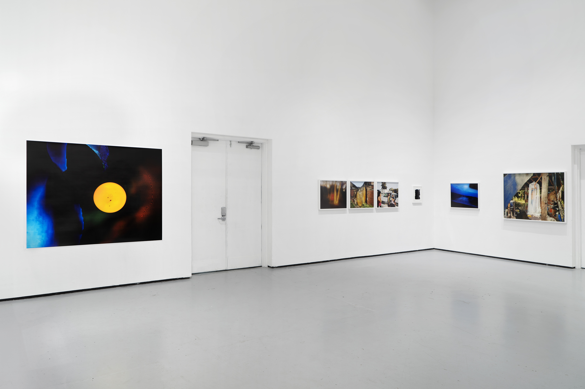

Installation view at Yale School of Art, 2022.
Installation view.
Family Portrait 2020, 2020, archival pigment print, 40" × 50".
Bankrupt On Selling, 2021, silver gelatin print, 8" × 10".
Black Hills Cremation, 2021, archival pigment print, 32" × 40".
After Warren, 2021, archival pigment print, 32" × 40".
Installation view.

Origin #2, 2021, archival pigment print, 60" × 75".
Installation view.
Installation view.
High Rock, 2021, archival pigment print, 24" × 30".

Flume, 2021, archival pigment print, 24" × 30".

Golgotha, 2021, archival pigment print, 24" × 30".
Broken Ground Glass (Expulsion), 2021, silver gelatin print, 10" × 8".

Black Hills (After), 2021, archival pigment print, 24" × 30".

Jack The Stripper / Fairies Wear Boots - 2021 - Remaster, 2021, archival pigment print, 40" × 50".
Installation view.
I present an incomplete historical timeline to set an ever-morphing stage upon which Ian’s photographs are acting and to provide the context for my conspiratorial analysis of their performance:
GI bill and the creation of the home loan → white flight and the forging of American suburban space as we know it → subsequent death of cities → gentrification and homogeneity1 across the urban/suburban gradient, forging class comforts and bourgeois rules of engagement as law → a flattening of the social landscape that mirrors the function of a photograph: framed rigidly, behaved, confined to two dimensions, repressed → fissures in this socioeconomic façade whose ideology is quickly falling apart; an apocalyptic failure of the image2 has revealed that this place doesn’t work for us. In the wake, a pervasive nihilism has leached out of the dense metropolitan center.3 It’s washed over the suburbs, following the predestined roads and highways designed to deliver us from the city and into the maws of the sprawl. The nihilism vaporized into a fog that reached rural stretches of this country and settled into the land. This is where Ian’s practice out in the world begins.
1 Sarah Schulman’s work on AIDS and gentrification helped bring the phenomenon of cultural/political/experiential homogeneity to the fore when considering the contemporary transformation of urban space.
2 Here I mean “image” in the widest sense of the word; tools through which we see ourselves. They are, as Flusser put it, “mediations between the world and human beings.”
3 Think L.A. in Blade Runner (1982) or the varying iterations of Gotham City. This affect carries an environment with it.
The Anarchitecture movement is revived once again before Ian’s lens, it too having spread from the cities outward.4 Except here, Matta-Clark’s vertical cut into the condemned home becomes Ian’s vertical smash.5 An electric zap scratches and animates a sheet of film, hunched buffalo seemingly aware of its presence among them. The surface of the film becomes a landscape in and of itself, layered actions (light, shadow, friction) complicating any understanding of depth. However, surfaces always give way under the pressure of expectation; ground glass cracks and the picture plane caves in on itself. Childhood homes are eventually demolished. Family photographs become sinkholes, and now we know the image has certainly failed us. Anarchitectural irreverence has found a new home in Ian’s work.
4 Anarchitectural thought has been reimagined by Black activists in the south (such as Take Em Down NOLA and Dismantle NOMA) as a mode of dissent when confronting the white supremacist legacies of southern public space and institutions.
5 Matta-Clark’s chainsaw disturbed the line between private and public and highlighted the pitfalls of modernism: our utopia has failed. Ian’s boulder reveals that the brick on the outside of the home isn’t really brick at all.
Maybe that’s Deckard standing before a room of civilians in a uniform that doesn’t quite fit, eyes downcast,6 aware that his jurisdiction has vastly expanded in our new world; but this is no hero’s journey. The false promise of sanctity has long passed. We need something else. Consider this as Fiver6 appears among three girls, warning us as he did his brother, “You are closer to death than I.”
6 This is another Blade Runner (1982) reference invoking the decades old debate about whether or not Rick Deckard is a replicant, sparked by an inhuman glow coming from his eyes in a key scene. The eyes in this photograph are hidden from us.
6 In the novel Watership Down (1972) by Richard Adams, Fiver is a rabbit with haunting prophetic abilities. Smaller than the rest, he is stricken by foreseen horrors as he and the other rabbits search desperately for a place that they can finally be safe.